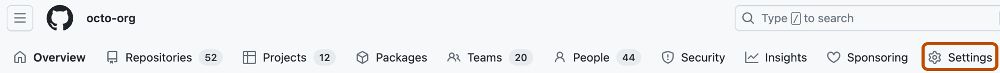
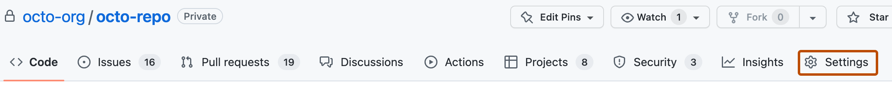

Control the rollout of agentic autofix across your enterprise, organizations, and repositories.
Access controls for agentic autofix cascade from the enterprise to the organization and repository:
Agentic Autofix is not available for user-owned repositories in an enterprise that uses Enterprise Managed Users.
If your organization used agentic autofix during the public preview, you must enable it again.
Before you enable the feature, review how the use of AI credits and GitHub Actions minutes affects your costs.
For a standalone organization, skip the enterprise procedure. For an eligible public repository owned by a personal account, skip the enterprise and organization procedures.
Enterprise owners and security managers can allow organizations in an enterprise to configure agentic autofix. This policy doesn't enable the feature for any organization or repository.
Organization owners and security managers can enable agentic autofix for all eligible repositories in their organization. For an enterprise-owned organization, the enterprise policy must also allow it.
Before you enable the organization setting, coordinate with repository administrators about any repositories that should opt out.
In the upper-right corner of GitHub, click your profile picture, then click Organizations.
Select an organization by clicking on it.
Under your organization name, click Settings. If you cannot see the "Settings" tab, select the dropdown menu, then click Settings.

In the " Security and quality" section of the sidebar, click Advanced Security then Global settings.
Under "Code scanning," to enable the feature, set Agentic Autofix to On.
For an organization-owned repository, agentic autofix is enabled by default when the organization enables it. Repository administrators can disable or re-enable it for an individual repository. For an eligible public repository owned by a personal account, a repository administrator can enable or disable it directly.
On GitHub, navigate to the main page of the repository.
Under your repository name, click Settings. If you cannot see the "Settings" tab, select the dropdown menu, then click Settings.

In the "Security and quality" section of the sidebar, click Advanced Security.
In the "Code Security" section, enable or disable Agentic Autofix by setting the toggle to On or Off.
After you enable agentic autofix, users with write access to the repository can assign code scanning alerts to Copilot. See Resolving code scanning alerts.
You can disable agentic autofix at the enterprise, organization, or repository level. If you disable it at the enterprise or organization level, repository administrators cannot re-enable it.
Enterprise owners and security managers can prevent all organizations and repositories in their enterprise from using agentic autofix.
Organization owners and security managers can disable agentic autofix for all repositories in their organization.
In the upper-right corner of GitHub, click your profile picture, then click Organizations.
Select an organization by clicking on it.
Under your organization name, click Settings. If you cannot see the "Settings" tab, select the dropdown menu, then click Settings.
In the " Security and quality" section of the sidebar, click Advanced Security then Global settings.
Under "Code scanning," set Agentic Autofix to Off.
Repository administrators can opt an individual repository out of agentic autofix. For an eligible public repository owned by a personal account, this disables the feature directly.
On GitHub, navigate to the main page of the repository.
Under your repository name, click Settings. If you cannot see the "Settings" tab, select the dropdown menu, then click Settings.
In the "Security and quality" section of the sidebar, click Advanced Security.
In the "Code Security" section, set Agentic Autofix to Off.